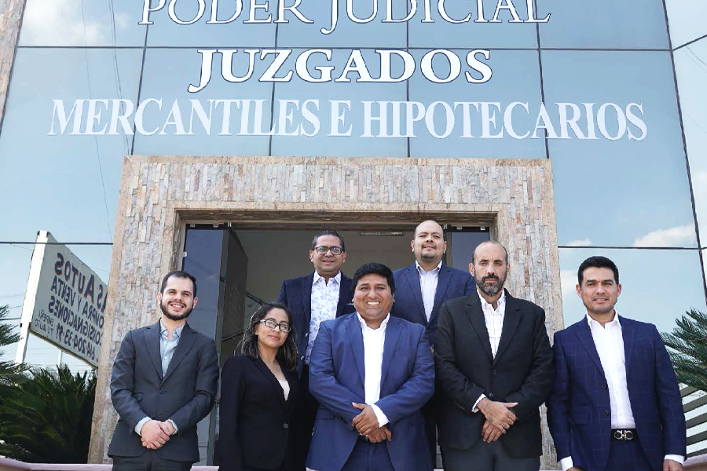
INFORMAMOS LAS ACTIVIDADES DE LOS ÓRGANOS COLEGIADOS DEL PODER JUDICIAL Y DE LA PRESIDENCIA DEL TRIBUNAL SUPERIOR DE JUSTICIA, EN UN AÑO QUE TUVO COMO RETO EL INICIO DE LA FUNCIÓN DE LOS TRIBUNALES LABORALES EN EL ESTADO DE COAHUILA
La justicia debe ser impartida bajo los mayores estándares de calidad pero también siempre bajo un esquema de eficiencia que permita que las personas resuelvan su problemática en el menor tiempo posible, sin obstáculos burocráticos que alarguen los procedimientos de manera injustificada y arbitraria.
Vencer esas inercias que dificultan la prontitud en la administración de justicia, ha sido labor prioritaria para nosotros y en ese sentido, durante 2022, mantuvimos nuestros esfuerzos para colocar a Coahuila como referente en la impartición de justicia con los más altos valores institucionales. Es así que en el eje de Justicia Eficiente, damos cuenta de las actividades que se realizaron en materia anticorrupción con nuestra participación en el Sistema Estatal. Además, damos a conocer la información respectiva de las labores realizadas tanto por el Pleno del Tribunal Superior de Justicia, el Tribunal Constitucional y el Consejo de la Judicatura, como órganos colegiados de mayor relevancia que orientan la labor jurisdiccional en el Estado.
De igual forma, resaltamos la vinculación interinstitucional que durante este año concretamos con diversas instancias públicas y privadas, que nos permiten colocarnos como un Poder Judicial que propicia la colaboración como mecanismo que garantiza mejores resultados en beneficio de la sociedad.
En este periodo además, asumimos con el mayor compromiso la reforma en Justicia Laboral pues a partir de octubre somos competentes en esta materia, garantizando el inicio de la función de los Tribunales Laborales en el Estado de Coahuila, por lo que informamos los diversos avances que se dieron en este rubro tan importante.
Finalmente, compartimos en este apartado las actividades que se realizaron por parte de la Presidencia del Tribunal Superior de Justicia, así como de las diversas comisiones conformadas por Magistradas y Magistrados del Pleno del Tribunal Superior de Justicia en diversos temas relevantes para la judicatura local.
PARTICIPACIÓN EN EL SISTEMA ESTATAL ANTICORRUPCIÓN
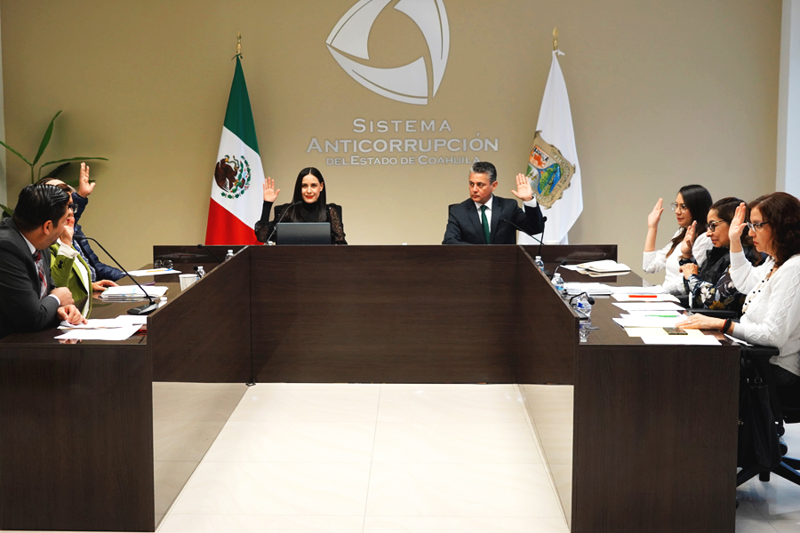
En la consolidación del Sistema Estatal Anticorrupción y como parte del Comité Coordinador, el Poder Judicial ha participado en la puesta en marcha del Taller para la Elaboración del Programa de Implementación de la Política Estatal Anticorrupción y la Plataforma Digital
Estatal, así como en el arranque y consolidación de proyectos como la Red de Participación Ciudadana; el Monitor CPC; el programa Por una nueva Cultura Educativa #yolevantolamano; la Estrategia del Fomento a la Participación Ciudadana en el Combate a la Corrupción, así como en la evaluación entre pares en coordinación con la Oficina de Naciones Unidas contra la Droga y el Delito (UNDOC).
PLENO DEL TRIBUNAL SUPERIOR DE JUSTICIA
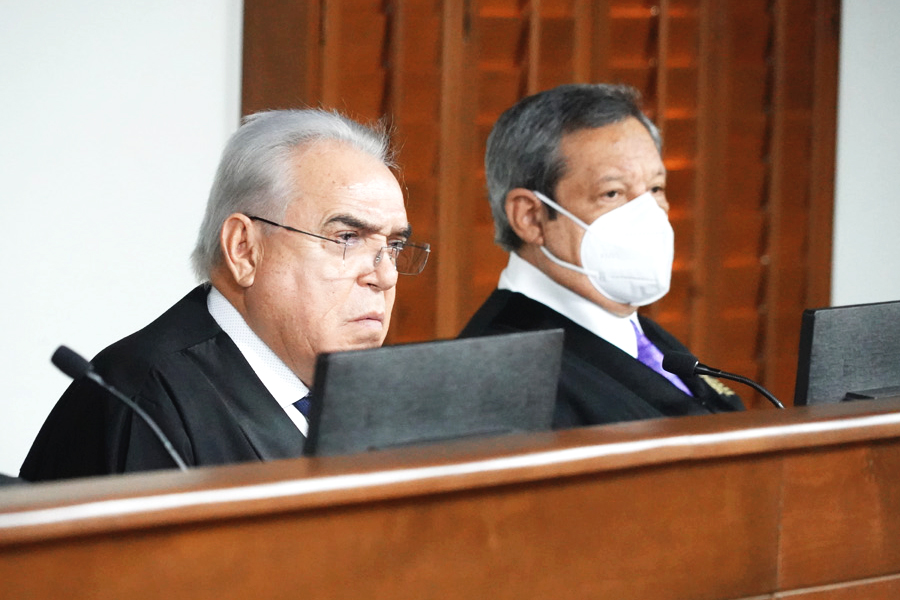
El Pleno del Tribunal Superior de Justicia representa el máximo órgano jurisdiccional del Poder Judicial del Estado, y en este periodo celebró 48 sesiones ordinarias y emitió 205 acuerdos correspondientes tanto a sus actividades administrativas, como a sus actividades jurisdiccionales, asimismo autorizó la inclusión de 45 auxiliares de la administración de justicia en diversas materias y admitió el trámite de 20 procedimientos judiciales para obtener la patente de Notario, así como un procedimiento administrativo disciplinario.
Este año, además integramos 184 expedientes auxiliares, en donde fueron emitidos mil 809 acuerdos de la Presidencia del Tribunal Superior de Justicia del Estado.
En el ámbito jurisdiccional resolvimos cinco recursos de apelación en los que el Estado es parte y uno continúa en trámite; resolvimos cuatro juicios de nulidad, así como 16 juicios de amparo.
En su carácter de Tribunal Constitucional, a través del Pleno del Tribunal Superior de Justicia, celebramos siete sesiones y emitimos 14 acuerdos correspondientes a estas actividades, atendimos en el año cinco acciones de inconstitucionalidad de la cuales resolvimos una y además interpusimos un recurso de reclamación; en este periodo emitimos un total 41 acuerdos.
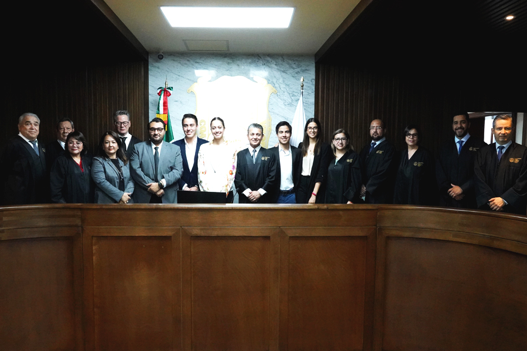
LABORES DESARROLLADAS POR LA SECRETARÍA GENERAL DE ACUERDOS DEL PLENO DEL TRIBUNAL SUPERIOR DE JUSTICIA DEL ESTADO
Durante el año 2022 dimos trámite a mil 52 exhortos, 12 cartas rogatorias, 80 incompetencias y 15 legalizaciones de firmas, así como a dos procedimientos administrativos los cuales están terminados. Además, para completar el proceso mediante el cual los profesionistas del derecho pueden ejercer como litigantes en el Poder Judicial del Estado, este año registramos 529 títulos de profesionales de derecho y expedimos seis constancias.
CONSEJO DE LA JUDICATURA
La administración, vigilancia y disciplina del Poder Judicial se encuentra a cargo del Consejo de la Judicatura del Estado, órgano con reconocimiento constitucional local, de acuerdo a lo previsto en el artículo 143 de la Constitución Política del Estado de Coahuila de Zaragoza.
El Consejo de la Judicatura toma sus decisiones de manera colegiada mediante la aprobación de acuerdos por parte de sus integrantes y contribuye no solo a garantizar la protección de los derechos humanos y el acceso a la justicia, sino también cumple con la importante tarea de prevenir y combatir la corrupción institucional.
Al implementar las medidas administrativas y normativas necesarias para la impartición de justicia en nuestro estado, el Consejo de la Judicatura trasciende en la impartición de una justicia eficiente, accesible, de calidad y acorde a los tiempos actuales, además de contribuir al fortalecimiento y modernización del Poder Judicial.
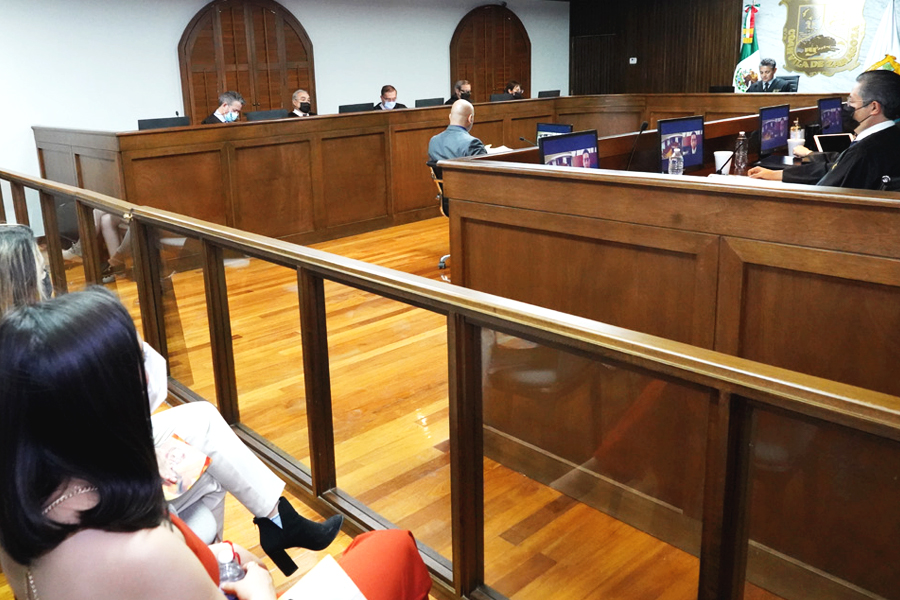
En 2022 se celebraron 16 sesiones de Consejo, en las que sus integrantes emitieron 180 acuerdos.
En cada uno de los rubros en que se desempeña la actividad del Consejo de la Judicatura durante el periodo anual 2022 se informa lo siguiente:
1. Rubro de administración
En este rubro, son conferidas al Consejo de la Judicatura tareas como el nombramiento y remoción de personal de juzgados, de tribunales y de áreas administrativas; crear órganos jurisdiccionales; supervisar el funcionamiento de los órganos que integran el Poder Judicial; dictar las medidas necesarias para el mejoramiento de la administración de justicia y expedir reglamentos y acuerdos generales que se requieran.
Es por ello, que en atención a las atribuciones antes citadas, se emitieron los acuerdos relativos a los temas de derechos humanos e igualdad de género; justicia digital; justicia especializada en materia hipotecaria; materia actuarial; acceso a la justicia; materia archivística y de transparencia; nuevo sistema de justicia laboral y carrera judicial.
Lo anterior, en colaboración con diversos órganos administrativos y no jurisdiccionales del PJECZ, como la Oficialía Mayor, la Secretaría Técnica y de Transparencia, la Visitaduría Judicial General y la Unidad de Apoyo a lo Jurisdiccional, quienes con su iniciativa y propuesta nos han permitido fortalecer la administración de justicia en beneficio de nuestro estado.
1.1 Derechos humanos e igualdad de género
Al respecto, emitimos cuatro acuerdos. Estos forman parte de los ejes de justicia cercana, de calidad y profesional, que corresponden a la política pública que la presidencia del Tribunal de Justicia ha impulsado con motivo de la modernización de la justicia local.
El primero es el acuerdo C-009/2022, de la sesión del 24 de enero de 2022. En este acuerdo aprobamos la creación del Registro Estatal de Personas Sancionadas por Violencia contra las Mujeres, así como su reglamento. El cual consiste en un sistema de información de carácter administrativo y público, en el que se encuentran registradas las personas condenadas y sancionadas en un procedimiento penal por una sentencia ejecutoriada. Este padrón, resulta de utilidad para las víctimas y potenciales víctimas pues facilita la prevención y protección ante factores de riesgo como la reincidencia y repetición de conductas de violencia contra las mujeres.
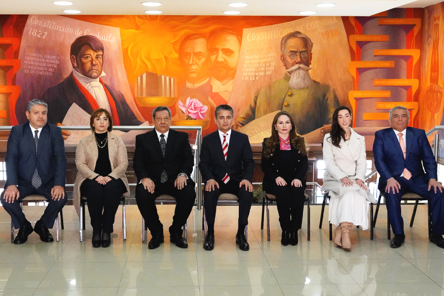
El registro inició su funcionamiento el 25 de enero de este año a cargo de la Secretaría Técnica y de Transparencia. Para regularlo aprobamos el Reglamento del Registro Estatal de Personas Sancionadas por Violencia contra las Mujeres.
El segundo acuerdo es el C-061/2022, de la sesión del 25 de mayo de 2022. Mediante el cual aprobamos el Protocolo para prevenir, atender y sancionar el hostigamiento y el acoso sexual o laboral en el Poder Judicial del Estado de Coahuila de Zaragoza. Este protocolo desarrollado por la Unidad de Derechos Humanos e Igualdad de Género es una medida que impulsa e informa sobre prevención, atención y sanción de la violencia laboral en el Poder Judicial. Entró en vigor el primero de junio de 2022.
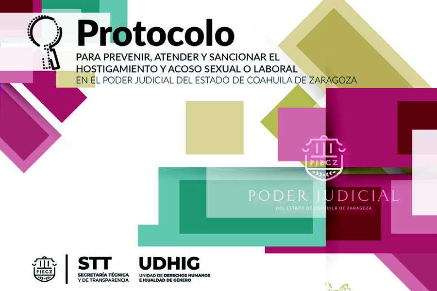
El tercer acuerdo es el C-105/2022, de fecha 31 de agosto de 2022. En este aprobamos la colaboración del Poder Judicial con la Agencia de los Estados Unidos para el Desarrollo Internacional (USAID), con el fin de poner en marcha el programa de Fortalecimiento de Unidades de Género en tribunales para juzgar con perspectiva de género e inclusión social.
Este proyecto tiene como objetivo facilitar el acceso a la justicia con enfoque de igualdad de género e inclusión social a los grupos en situación de vulnerabilidad, así como fortalecer los conocimientos y habilidades de las unidades de género de los poderes judiciales, juezas y jueces en materia penal de los sistemas de justicia penal locales.
El cuarto acuerdo es el C-124/2022, de fecha 28 de septiembre de 2022, con el que aprobamos la implementación del programa de diagnóstico sobre el ambiente laboral en este poder público que estará a cargo de la Unidad de Derechos Humanos e Igualdad de Género adscrita a la Secretaría Técnica y de Transparencia.
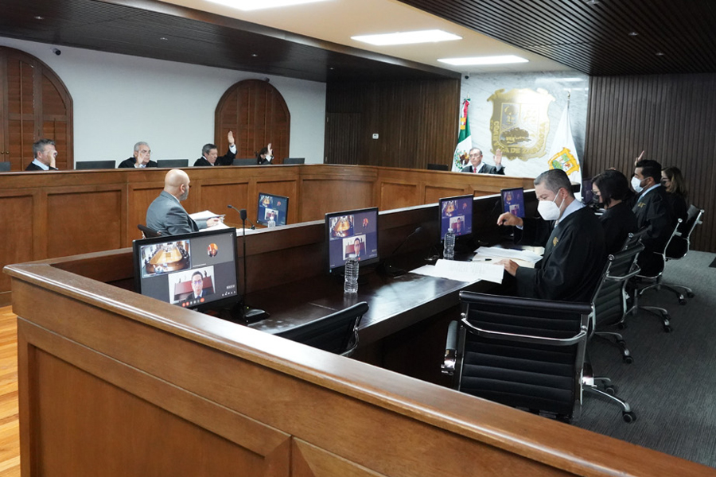
Dicho programa, entró en vigor en septiembre de este año y tiene como propósito conocer el estado que guarda el ambiente laboral que existe en los órganos del Poder Judicial, a fin de elaborar políticas públicas transversales para prevenir la violencia laboral que afecta a todas las personas, así como generar información y estadísticas suficientes y objetivas.
1.2 Justicia digital
Dentro de este rubro, impulsamos las herramientas tecnológicas que garantizan un acceso a la justicia rápida y eficiente. Los acuerdos más relevantes al respecto son los siguientes:
El 11 de enero de 2022 aprobamos los lineamientos que regulan las actividades del Poder Judicial, durante el nivel moderado del semáforo de riesgo epidémico del virus SARS-CoV2 (enfermedad de COVID-19). En estos lineamientos regulamos el uso de las tecnologías de la información y comunicación ante ese contexto de salubridad, para garantizar el acceso a la justicia a la ciudadanía en armonía con la salud de todas y todos.
Sobre el uso del Buzón Electrónico de Demandas y Promociones (BEDP), el 30 de marzo de 2022 emitimos el acuerdo C-032/2022 mediante el cual aprobamos la modificación de las Reglas de Operación del BEDP. Con ello, ampliamos la capacidad tecnológica para enviar de manera más rápida y segura documentos judiciales por medio del BEDP.
También eliminamos el requisito de autorización judicial para presentar promociones a través del BEDP y establecimos que el registro de las personas usuarias de este buzón se pudiera realizar en línea a través del portal de internet del Poder Judicial con asistencia remota por parte de la Dirección de Innovación.
Por otro lado, el 8 de junio de 2022 aprobamos el acuerdo para implementar las Reglas de Operación del Buzón de Depósito de Anexos en todos los distritos judiciales del estado.
Por último, mediante el acuerdo C-137/2022 aprobamos el esquema de uso opcional del sistema de citas mediante plataforma en línea, y emitimos los lineamientos que lo regulan.
El esquema de uso opcional del sistema de citas en línea consiste en que las personas usuarias pueden acudir al servicio de impartición de justicia para consultar y revisar expedientes, dentro del horario de atención al público, a los juzgados y tribunales de este poder público, sin que sea necesario contar con previa cita.
1.3 Justicia civil con especialización hipotecaria
En el Poder Judicial estamos convencidos que las necesidades sociales actuales demandan la especialización de los sistemas de justicia para atender con prontitud, calidad y profesionalismo los conflictos que se presentan.
En este contexto, mediante el acuerdo C-031/2022 de fecha 30 de marzo de 2022, aprobamos lo siguiente: la creación del Juzgado Quinto de Primera Instancia en Materia Civil con Especialización Hipotecaria del Distrito Judicial de Saltillo; la modificación de la competencia del Juzgado Quinto de Primera Instancia en Materia Civil del Distrito Judicial de Torreón para especializarse en asuntos hipotecarios; la implementación del sistema de gestión en materia hipotecaria; y el Reglamento Interior de los Juzgados de Primera Instancia en Materia Civil con Especialización Hipotecaria del Poder Judicial del Estado.
Con ello, ahora contamos con dos juzgados civiles con especialización hipotecaria que atienden, de manera accesible y rápida, la importante cantidad de asuntos en esta asignatura.
1.4 Materia actuarial
La Central de Actuarios es un órgano trascendental en la impartición de justicia, ya que se especializa en auxiliar a los juzgados en la práctica de notificaciones, y cuenta con personas notificadoras y un parque vehicular amplio que permite colaborar con rapidez y eficiencia en la impartición de justicia.
El 31 de agosto de 2022 emitimos el acuerdo C-098/2022, en el que aprobamos el auxilio en materia actuarial por parte de la Central de Actuarios de Saltillo al Juzgado Quinto de Primera Instancia en Materia Civil con Especialización Hipotecaria del Distrito Judicial de Saltillo. Así, la Central de Actuarios fortaleció la labor actuarial de este juzgado especializado.
1.5 Administración de justicia
Emitimos acuerdos que contribuyeron a cumplir con los ejes de calidad, eficiencia, profesionalismo e innovación de la política judicial para la modernización de la justicia.
El 24 de enero de 2022 emitimos el acuerdo C-013/2022, en el que determinamos mantener la tarifa de las copias simples en un costo de un peso con cincuenta centavos, y seguir absorbiendo el 22.5 por ciento del costo de las copias simples y certificadas expedidas por los órganos jurisdiccionales.
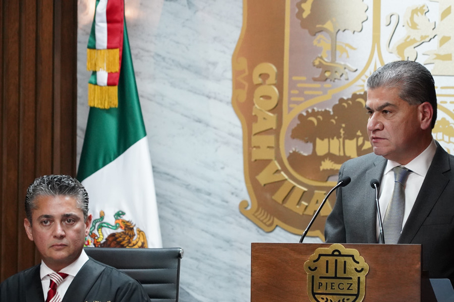
Asimismo, emitimos el acuerdo C-014/2022 en el que decidimos la gratuidad de la consulta de expedientes en el Archivo General del Poder Judicial.
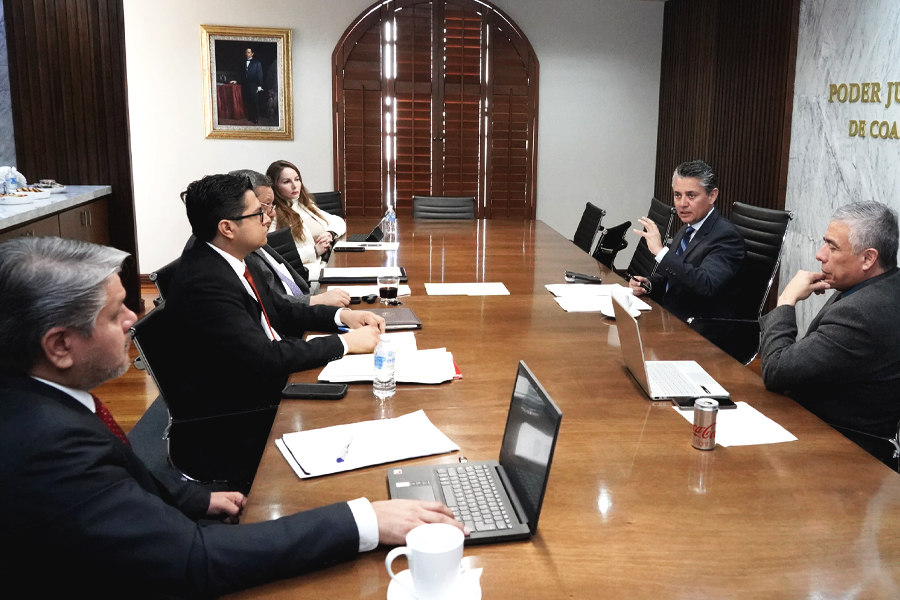
Por último, el 26 de septiembre del 2022 establecimos el uso opcional del cubrebocas dentro de los órganos jurisdiccionales, no jurisdiccionales y administrativos del PJECZ, tanto para las personas usuarias como para las y los trabajadores de este poder público, de acuerdo a las medidas impulsadas por las autoridades competentes en materia de salud.
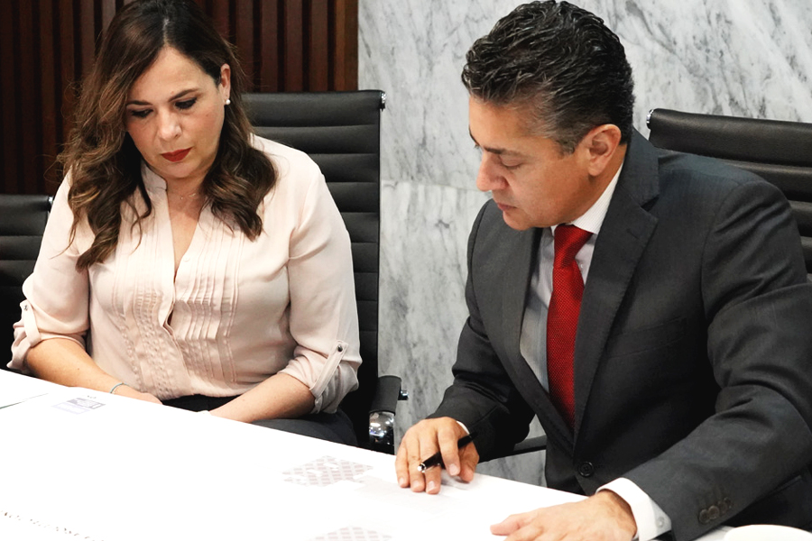
1.6 Materia archivística y de transparencia
Para lograr una justicia de calidad, profesional, eficiente e innovadora, durante este año aprobamos la reforma al Reglamento de la Secretaría Técnica y de Transparencia de la Presidencia del Tribunal Superior de Justicia del Estado de Coahuila de Zaragoza, y las Reglas de Operación de la Comisión Interdisciplinaria de Archivos del Poder Judicial del Estado de Coahuila de Zaragoza, a través del acuerdo C-078/2022 del 29 de junio de 2022.
Estas reformas las realizamos con dos objetivos.
a) Otorgar funciones de administración y contratación de servicios de depuración de archivos del Secretario Técnico de la Comisión Interdisciplinaria de Archivos del Poder Judicial del Estado de Coahuila de Zaragoza.
b) Creación de la figura de Enlace de Gestión Documental, transparencia y estadística (Enlace GDTE).
Con estas reformas se impacta positivamente en materia archivística y de transparencia, ya que permite que exista mayor eficacia en los procesos de depuración de documentos y en temas de estadística y de transparencia y acceso a la información pública.
1.7 Nuevo Sistema de Justicia Laboral
El Consejero Presidente en uso de sus facultades legales emitió el acuerdo del 25 de marzo de 2022. En este acuerdo se aprobó la creación del diplomado sobre la reforma en materia de justicia laboral por parte del Instituto de Especialización Judicial y se emitió la convocatoria y los lineamientos para participar en el diplomado. Las y los integrantes del Consejo de la Judicatura a través del acuerdo C-33/2022 de fecha 30 marzo de 2022, ratificaron la emisión del acuerdo referido.
Lo anterior, con el objetivo de proporcionar a las y los participantes los conocimientos, habilidades y destrezas especializadas y necesarias para comprender la estructura y funcionamiento del nuevo sistema de justicia laboral, con el fin de fortalecer las competencias profesionales indispensables para el idóneo desempeño de la función que les sea encomendada y en la realización de sus diversas actividades como operadores jurídicos en materia laboral. La aprobación del diplomado constituyó un requisito para participar en el examen de méritos en esta materia.
Asimismo, una vez que concluyó el diplomado de formación en el nuevo sistema de justicia laboral y para estar en aptitud de atender la demanda social de este sistema de justicia, aprobamos la emisión de las convocatorias EM-01/2022, EM-02/2022 y EM-03/2022 para aspirantes al cargo de juez, jueza, secretaria, secretario, notificador o notificadora dentro de los Tribunales Laborales. Esto mediante el acuerdo C-077/2022 de fecha 29 de junio de 2022.
En este acuerdo establecimos las bases y requisitos que deberían contener las convocatorias antes referidas, de conformidad con lo establecido en el Reglamento para los Exámenes de Méritos del Poder Judicial del Estado de Coahuila de Zaragoza.
Aprobamos la implementación del nuevo sistema de justicia laboral en el Poder Judicial del Estado de Coahuila de Zaragoza a través del acuerdo C-125/2022 del 28 de septiembre de 2022.
Emitimos este acuerdo toda vez que en el artículo quinto transitorio del decreto por el cual se reforma, entre otras leyes, la Ley Federal del Trabajo, publicada en el Periódico Oficial de la Federación el primero de mayo de 2019, se establece que los centros de conciliaciones locales y los tribunales del Poder Judicial de las entidades federativas iniciarán actividades a más tardar el 3 de octubre de 2022.
El Estado de Coahuila de Zaragoza formó parte de la tercera etapa de implementación, de conformidad a lo establecido por el Consejo de Coordinación para la implementación de la Reforma al Sistema de Justicia Laboral.
Para el cumplimiento de esta reforma, aprobamos la creación de seis tribunales laborales ubicados en los distritos judiciales de Acuña, Monclova, Río Grande, Región Carbonífera, Saltillo y Torreón. Estos tribunales iniciaron sus funciones el tres de octubre de 2022 y su estructura orgánica quedó establecida en el acuerdo de implementación referido.
En ese contexto, una vez transcurridas todas las fases de los Exámenes de Méritos a que se refieren las convocatorias antes citadas, el 30 de septiembre de 2022, se realizó la evaluación de méritos y las calificaciones finales del examen de méritos laboral, así como las asignaciones de los cargos mencionados, para integrar los tribunales laborales del Poder Judicial del Estado de Coahuila de Zaragoza.
1.8 Carrera judicial
En el Consejo de la Judicatura iniciamos 12 procedimientos de reelección de juezas y jueces del Poder Judicial del Estado de Coahuila de Zaragoza. Estos procedimientos de reelección tienen como objetivo revisar que las y los titulares de órganos jurisdiccionales sean personas idóneas, capacitadas y que cuenten con los requisitos para seguir ejerciendo esta importante labor.
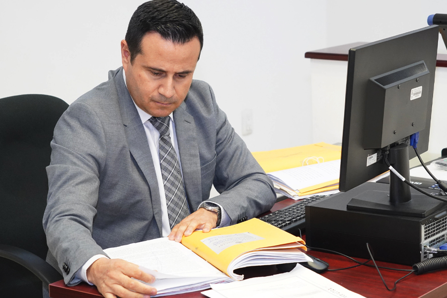
En el acuerdo C-097/2022 del 31 de agosto de 2022 en el Consejo de la Judicatura estimamos conveniente adherir nuevos indicadores de evaluación en el procedimiento de reelección. Esto, toda vez que la reelección de los funcionarios de la administración de justicia tiene como principal objetivo evaluar el desempeño de nuestras magistradas, magistrados, jueces y juezas, garantiza tanto la estabilidad de las personas juzgadoras como su independencia judicial y por ende el efectivo acceso a la justicia.
En el Consejo adherimos como indicadores de evaluación la realización de un arqueo de valores y un informe sobre incidencias detectadas a cargo de la Auditoría Interna de este poder público, así como un informe de la Secretaría Técnica y de Transparencia de la Presidencia del Tribunal Superior de Justicia del Estado relativo a la información estadística de las juezas y jueces del Poder Judicial.
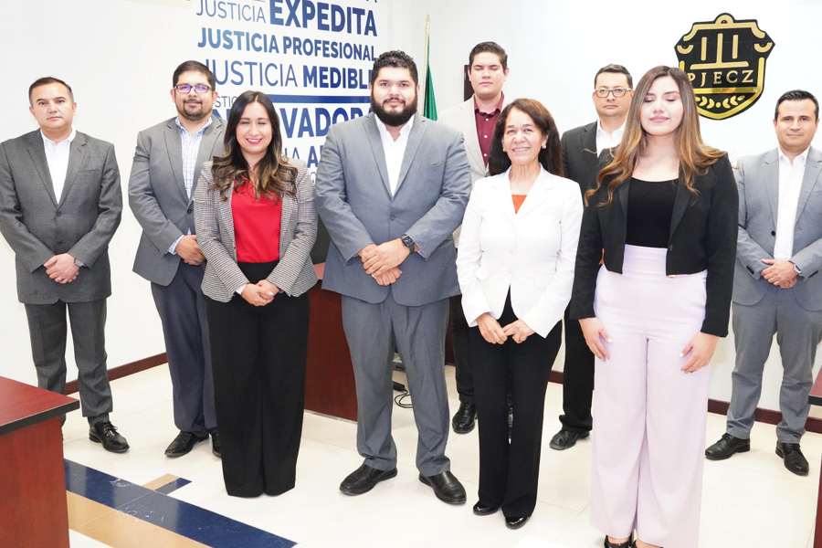
De igual manera aprobamos como parte de los referidos indicadores una visita especial de manera obligatoria por parte de la Visitaduría Judicial General, la cual deberá llevarse a cabo en cada procedimiento de reelección como mecanismo obligatorio de evaluación del desempeño judicial.
Con el objeto de dar a conocer el procedimiento de reelección aprobamos la difusión del mismo a través del portal del Poder Judicial del Estado.
1.9 Oralidad Familiar
En el Consejo de la Judicatura aprobamos mediante el acuerdo C-159/2022 la incorporación de los juzgados familiares tradicionales de los distritos judiciales de Saltillo, Torreón y Monclova, al modelo de Justicia Familiar Oral.
Esto tomando en consideración que el derecho de acceso a la justicia adquiere matices distintos cuando se trata de diversas materias. Sin embargo, respecto a la materia familiar, el acceso a la justicia adquiere una connotación de protección reforzada, al ser la familia una institución nuclear de la sociedad, cuya protección es de interés público y social.
Asimismo, tomamos en cuenta también la carga de trabajo que existía en los juzgados orales familiares, pues de la estadística proporcionada por la Secretaría Técnica y de Transparencia se advirtió que efectivamente los juzgados orales concentraban mayor carga de trabajo que los juzgados tradicionales. Por lo tanto se decidió reorganizar el modelo de los juzgados con la finalidad de contribuir a garantizar el acceso a la justicia de forma cada vez más rápida y expedita.
Para ello, aprobamos un esquema organizacional para la transición de los juzgados tradicionales al modelo de justicia familiar oral.
En este esquema se señalaron los juzgados que transitarían a la oralidad. Además, se señaló la distribución y conocimiento de los procedimientos familiares. En este acuerdo también se estableció la forma en la que se seguirían conociendo los asuntos tradicionales y la manera en la que se podrán tramitar asuntos concluidos bajo las reglas del Código de Procedimientos Familiares.
Finalmente, también implementamos el mecanismo de seguimiento del modelo de Justicia Oral Familiar en el Poder Judicial. Este mecanismo tiene como objeto evaluar el seguimiento de la incorporación de los juzgados tradicionales al nuevo modelo de justicia familiar, así como la carga de trabajo de los juzgados y proponer medidas pertinentes al Consejo de la Judicatura para continuar garantizando el adecuado funcionamiento de la administración de justicia.
Este mecanismo está integrado de la siguiente forma:
a) La o el Magistrado Presidente de la Sala Colegiada Civil y Familiar del Tribunal Superior de Justicia del Estado.
b) La o el Magistrado Presidente de la Sala Regional del Tribunal Superior de Justicia del Estado.
c) La persona titular de la Secretaría Técnica y de Transparencia de la Presidencia del Tribunal Superior de Justicia del Estado.
d) La persona Oficial Mayor del Poder Judicial del Estado.
e) Las personas titulares de las Oficialías de Partes de los distritos judiciales de Saltillo, Torreón y Monclova.
f) La persona Secretaria de Acuerdo y Trámite del Consejo de la Judicatura del Estado de Coahuila de Zaragoza.
1.10 Amparos atendidos por el Consejo de la Judicatura
Durante el año 2022 en el Consejo de la Judicatura recibimos 48 amparos que se emitieron en contra de acuerdos de este órgano colegiado.
A la fecha se sobreseyeron 17 y siguen en trámite 31 juicios de amparo, en los que no se ha emitido resolución definitiva o se interpuso el recurso de revisión en contra de la sentencia dictada por los Juzgados de Distrito.
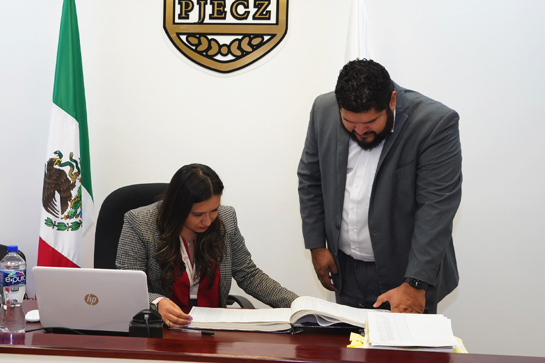
2. Rubro de vigilancia, acciones desarrolladas por la Visitaduría Judicial General
Por lo que respecta a este rubro, el Consejo de la Judicatura del Estado dictó acuerdos específicos con la finalidad de llevar a cabo de manera constante y periódica las revisiones dentro de los órganos jurisdiccionales y no jurisdiccionales con el objetivo de garantizar que dichos órganos funcionen de manera adecuada, bajo los estándares que rigen las normatividades aplicables.
Mantenemos el propósito de asegurar a las y los justiciables el derecho de que la función jurisdiccional se realice bajo los principios de legalidad, imparcialidad, profesionalismo, celeridad y eficiencia y a través de la Visitaduría Judicial General, los órganos jurisdiccionales de primera instancia así como las unidades de apoyo a la función jurisdiccional son objeto de visitas y supervisiones en cuanto al cumplimiento de sus funciones y la evaluación de su desempeño.
Emitimos el acuerdo C-096/2022 de fecha 31 de agosto de 2022 mediante el cual regulamos la facultad de la Visitaduría Judicial General para la emisión de recomendaciones en las visitas judiciales, con la finalidad de que las mismas sean idóneas, necesarias y proporcionales, para contribuir a garantizar el acceso a la justicia de forma pronta y expedita.
Durante este año, incrementamos la cantidad de ejercicios de visita e inspección realizados, para llegar a 210 visitas judiciales e inspecciones administrativas realizadas, divididas entre ordinarias, extraordinarias y especiales de reelección de titulares de juzgados.
Para estos ejercicios dimos difusión mediante los sitios electrónicos del Poder Judicial así como en las sedes, colocando avisos y pendones que anticiparon la visita, de esta manera, nuestros visitadores e inspectores atendieron a más de 600 personas.
Durante estas visitas fueron revisados por las y los visitadores e inspectores adscritos a la Visitaduría Judicial General más de dos mil 800 expedientes, 684 horas de audiencia, mil 300 libros físicos y 460 libros electrónicos, además de cuatro mil 600 elementos auditables como informes de trabajo social, dictámenes psicológicos y expedientes de mediación, entre otros.
A fin de hacer más eficaz la revisión de la Visitaduría Judicial General en cada jornada de visita e inspección, determinamos diversificar el enfoque utilizado, al revisar aspectos de manera cuantitativa y cualitativa y obtener información útil y precisa en cuanto al análisis de los expedientes, el debido llenado de libros de gobierno, videos de audiencias, remesas del archivo judicial y carpetas de los órganos no jurisdiccionales, mientras que se continuará usando un enfoque cuantitativo cuando se revise la estadística judicial, las tasas de diferimiento de audiencias y de productividad de los juzgados y órganos no jurisdiccionales.
Además, con la finalidad de eficientar tanto los recursos materiales como los recursos humanos, el 27 de abril de 2022 aprobamos el uso de la firma electrónica por los visitadores y las visitadoras judiciales, inspectores e inspectoras administrativas, así como por las autoridades intervinientes en las visitas e inspecciones a partir del primer periodo ordinario del año judicial 2022.
En concordancia con lo anterior y manteniendo nuestro compromiso por modernizar y mejorar los procesos del Poder Judicial del Estado de Coahuila a través del uso de herramientas tecnológicas, lanzamos por medio de la Dirección de Innovación de la Oficialía Mayor, una plataforma de firmado electrónico para las actas de visita judicial e inspección administrativa. Actualmente un acta de visita se convierte en un documento digital, resultando un ahorro de 60 mil hojas de papel en un año.
3. Rubro de disciplina
El Consejo de la Judicatura tiene como pilar fundamental vigilar que las y los servidores públicos que integran el Poder Judicial desempeñen sus funciones bajo la aplicación de los principios y valores que rige la ética pública y que convergen de manera permanente en la impartición y administración de justicia a su cargo.
Para garantizar una justicia de calidad eficiente, profesional y cercana, corresponde al Consejo de la Judicatura el trámite del procedimiento materialmente jurisdiccional, que con el respeto y protección del debido proceso y de las garantías judiciales, se atribuye la comisión de faltas administrativas a servidores públicos previstas en la Ley Orgánica del Poder Judicial del Estado de Coahuila de Zaragoza.
En este año, admitimos 195 denuncias o quejas planteadas por personas usuarias del sistema de justicia local.
Durante 2022 resolvimos 244 expedientes administrativos que corresponden a este año, de los cuales se emitieron 264 resoluciones, esto debido a que algunos de los expedientes se instruyeron en contra de varios servidores públicos, así como, de años anteriores, en los siguientes rubros:
Tabla 10. Expedientes administrativos y auxiliares resueltos
| Rubro | Cantidad |
|---|---|
| Inicio de procedimientos (algunos se instruyen contra dos o más servidores públicos) | 28 |
| No inicio de procedimiento | 26 |
| Improcedentes | 146 |
| Sin materia | 19 |
| Falta de competencia | 4 |
| Prescripción | 1 |
| Se desecha el escrito de queja | 3 |
| Total | 227 |
Fuente: Consejo de la Judicatura del Estado de Coahuila de Zaragoza. 2022.
Tabla 11. Sanciones impuestas por el Consejo de la Judicatura
| Rubro | Cantidad |
|---|---|
| Apercibimiento | 6 |
| Amonestación | 1 |
| Suspensión | 1 |
| Destitución | 3 |
| Absolutorias | 24 |
| Mixtas absolutorias y con sanción | 2 |
| Total | 37 |
Fuente: Consejo de la Judicatura del Estado de Coahuila de Zaragoza. 2022.
Tabla 12. Procedimientos administrativos atendidos
| Tipo | Cantidad |
|---|---|
| En trámite para recabar medios de prueba para mejor proveer respecto al inicio o no del procedimiento disciplinario | 111 |
| Expedientes turnados a la Comisión de Vigilancia y de Disciplina para que elabore el proyecto de inicio, de no inicio o de improcedencia, según sea el caso | 2 |
| Expedientes turnados a la Comisión de Vigilancia y de Disciplina para que elabore el proyecto de resolución definitiva que corresponda | 9 |
| Total | 122 |
Fuente: Consejo de la Judicatura del Estado de Coahuila de Zaragoza. 2022.
Por otro lado, en el año 2022 se radicaron 16 expedientes auxiliares y se resolvieron 15, incluyendo de años anteriores, con relación a declarar sin materia el procedimiento por falta de ratificación del escrito de queja, incompetencia, falta de pruebas o porque se le dio un número expediente administrativo disciplinario. Existe un asunto pendiente por resolver en este rubro.
3.1 Atención a juicios de amparo en los asuntos disciplinarios
En lo que respecta a la atención y tramitación de los juicios de amparo en los que el Consejo de la Judicatura fue señalado como autoridad responsable, en la actualidad se tienen 38 asuntos: 17 corresponden a juicios iniciados en el 2022; tres al 2021; seis al 2020; y 12 al año 2019.
Cabe precisar que en el año 2022 resolvimos 12 juicios de amparo: se concedieron dos; se desecharon dos; se negaron tres; y se sobreseyeron cinco.
VINCULACIÓN INTERINSTITUCIONAL
Con el objetivo de desempeñar el ejercicio de nuestras funciones de manera más profesional y expedita y garantizar así una tutela judicial efectiva, celebramos convenios de colaboración así como alianzas estratégicas con diversas entidades gubernamentales del ámbito federal, estatal y municipal además de instituciones públicas y privadas; para los cuales desarrollamos y fortalecemos los lazos de vinculación interinstitucional.
Gracias a esta suma de voluntades, durante el período que se informa, signamos cuatro convenios de colaboración, así como la adopción de un pacto estratégico, con lo cual impulsamos un modelo de justicia abierta con perspectiva de género; promovimos la difusión, formación, capacitación e intercambio de información, así como el desarrollo de proyectos en materia de derechos humanos y su protección.
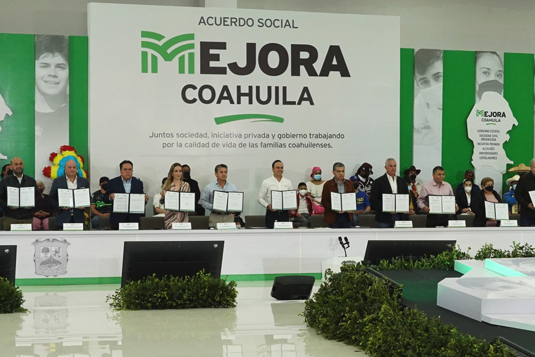
Participamos en el intercambio de información que se posea en virtud de la competencia y del ejercicio de nuestras atribuciones, que incida y contribuya a la prevención e identificación de operaciones con recursos de procedencia ilícita y relacionados con ésta; obtuvimos el subsidio para la implementación de la reforma al sistema de justicia laboral en el estado y garantizamos la inclusión social en la garantía judicial para el pleno ejercicio de los derechos de la comunidad Kickapoo.
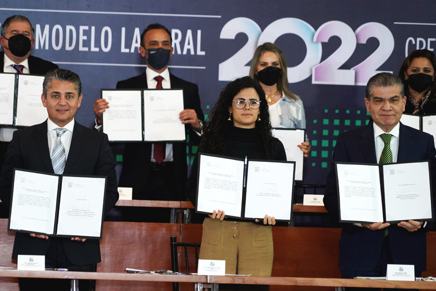

Tabla 13. Convenios celebrados por el Poder Judicial del Estado de Coahuila de Zaragoza.
| Instancia con la que se suscribe | Objeto del convenio | Fecha de firma |
|---|---|---|
| Organizaciones de la Sociedad Civil, Poderes Judiciales de los Estados, Institutos de Transparencia e Instituciones afines | Pacto estratégico para impulsar un modelo de justicia abierta con perspectiva de género que responda a las diversas realidades y contextos. | 22 de febrero |
| Academia Interamericana de Derechos Humanos de la Universidad Autónoma de Coahuila | Coadyuvar al enriquecimiento en la promoción, protección y el estudio de los derechos humanos. | 6 de abril |
| Unidad de Inteligencia Financiera de la Secretaría de Finanzas del Gobierno del Estado de Coahuila de Zaragoza | El desarrollo y fortalecimiento de acciones que permitan el intercambio de información que contribuya a la prevención e identificación de operaciones con recursos de procedencia ilícita y los relacionados con esta. | 16 de junio |
| Secretaría del Trabajo y Previsión Social | Otorgamiento del subsidio para la tercera etapa de implementación de la reforma al Sistema de Justicia Laboral. | 20 de junio |
| Comunidad Kickapoo | Garantizar la inclusión social en el desempeño de la tutela judicial a ésta comunidad. | 21 de septiembre |
Fuente: Secretaría Técnica y de Transparencia de la Presidencia del Tribunal Superior de Justicia del Estado de Coahuila de Zaragoza. 2022.
IMPLEMENTACIÓN DE LA JUSTICIA LABORAL
El 24 de febrero de 2017 se publicó el decreto que reforma y adiciona diversas disposiciones de los artículos 107 y 123 constitucionales en materia de justicia laboral, en este mismo contexto el 1 de mayo de 2019 se publicó el decreto por el que se reformó la Ley Federal del Trabajo; esta reforma transformó la noción de la justicia laboral en el país al centrarse en tres rubros trascendentales: un nuevo modelo de impartición de justicia ágil y expedito, basado primordialmente en la oralidad, inmediación, continuidad, concentración y publicidad; un modelo que privilegia los mecanismos alternativos de solución de controversias y, que pondera el derecho de las y los trabajadores a su libertad y democracia sindical y negociación colectiva.
Las diversas obligaciones y compromisos internacionales asumidos por el Estado Mexicano mediante la ratificación de convenios y tratados en materia de trabajo, principalmente en el contexto de la Organización Internacional del Trabajo (OIT) y de los acuerdos comerciales regionales de los que México es parte, derivaron en lo que hoy conocemos como la Reforma Laboral, refrendando así el interés y el deber en la defensa de los derechos de las y los trabajadores.
La reforma constitucional otorga al Poder Judicial de cada entidad federativa la competencia en materia de justicia laboral y el camino por el que el Poder Judicial del Estado de Coahuila de Zaragoza transitó hacia el fin de instaurar los Tribunales Laborales en la entidad, significó una ardua tarea que, con base en nuestros principios de acceso a una justicia abierta, transparente y profesional, nos permitieron cumplir en tiempo, forma y con total responsabilidad y compromiso este objetivo, en constante diálogo y comunicación con los sectores productivos y una coordinación permanente con el Poder Ejecutivo.
ARMONIZACIÓN LEGISLATIVA
Para iniciar con este proyecto, se llevó a cabo la reforma a los diversos ordenamientos jurídicos que nos proporcionaron el marco para la competencia jurisdiccional, la Constitución Política del Estado de Coahuila de Zaragoza se armonizó en fecha 22 de noviembre de 2019 con lo dispuesto en la propia a nivel federal y el 15 de julio de 2022 el Congreso del Estado aprobó la adecuación de nuestra Ley Orgánica propuesta por el Pleno a fin de establecer a los Tribunales Laborales como órganos integrantes del Poder Judicial
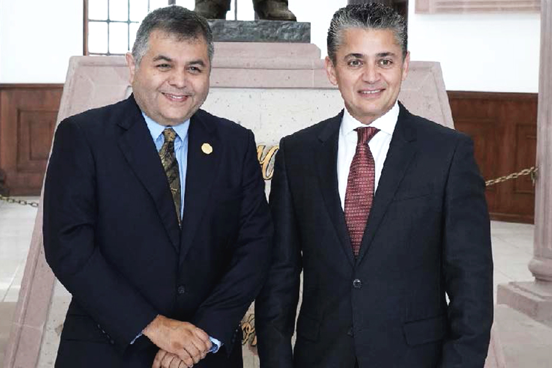
PROCESO DE SELECCIÓN – EXAMEN DE MÉRITOS
Para cumplir con la obligación de establecer Tribunales Laborales dentro de la tercera etapa de su implementación a nivel federal, en el Poder Judicial planeamos, coordinamos y organizamos el mecanismo para seleccionar al personal que fungiría como jueces, juezas, secretarias y secretarios instructores así como notificadores y notificadoras, con el firme propósito de constituir tribunales que sean referente a nivel nacional en cuanto a preparación, diligencia y estructura funcional.
Por tal motivo, impartimos a través del Instituto de Especialización Judicial del Poder Judicial y con la colaboración de la Universidad Vizcaya de las Américas, el Diplomado sobre la Reforma en materia de Justicia Laboral con temas como: derecho colectivo, amparo, derechos humanos, derecho procesal del trabajo, trabajo de menores, trabajo de mujeres, medidas cautelares y el nuevo procedimiento ordinario. Para el cual, contamos con la participación de expositores reconocidos a nivel nacional que con sus conocimientos abonaron al objetivo de preparar a los futuros operadores del nuevo sistema.
Concluido dicho diplomado, emitimos la convocatoria para la sustentación de los exámenes de méritos para integrar la plantilla de personal adscrito a estos tribunales, los cuales finalmente quedaron integrados con 28 funcionarios: 13 jueces y juezas, cinco secretarias y secretarios instructores y 10 notificadores y notificadoras y demás personal administrativo.
SUBSIDIOS
El Gobierno de México, a través de la Secretaría del Trabajo y Previsión Social, coadyuva con las entidades federativas en la implementación de la Reforma Laboral a través de la transferencia de subsidios federales destinados a la adecuación y equipamiento de los Centros de Conciliación y de los Tribunales Laborales locales, así como la capacitación y profesionalización de su personal.
Para la implementación de los Tribunales Laborales en el Poder Judicial recibimos una aportación de 24 millones 824 mil 884.78 pesos.
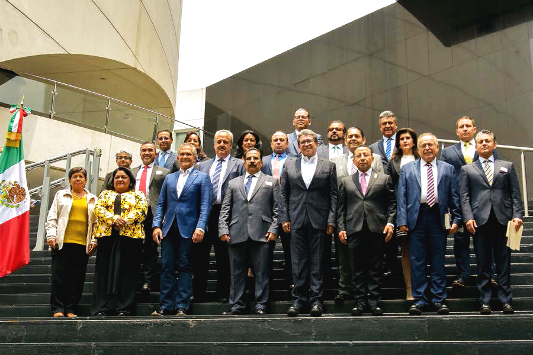
INICIO DE FUNCIONES
El tres de octubre de 2022, pusimos en marcha los seis Tribunales Laborales del Poder Judicial del Estado de Coahuila de Zaragoza, con el compromiso de responder en todo tiempo a la defensa de los derechos de las y los trabajadores, promover la conciliación prejudicial y respetar los derechos humanos de las partes, garantizando además la paridad de género en su integración.
Estos tribunales tienen presencia en los distritos judiciales de Acuña, Monclova, Región Carbonífera, Río Grande, Saltillo y Torreón.
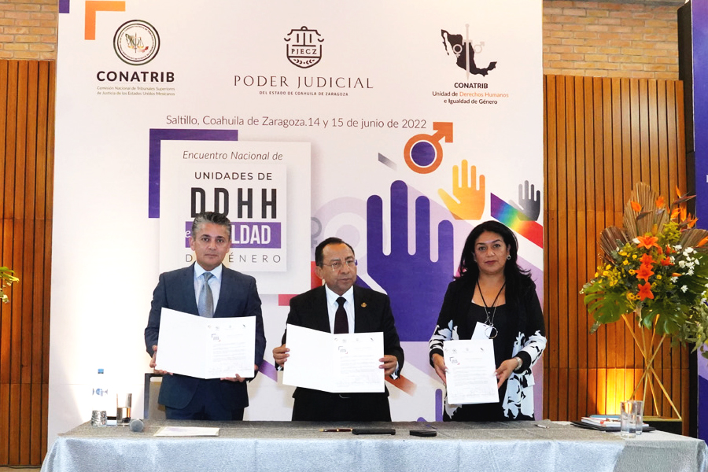
PARTICIPACIÓN EN LA COMISIÓN NACIONAL DE TRIBUNALES SUPERIORES DE JUSTICIA DE LOS ESTADOS UNIDOS MEXICANOS Y EN LA UNIDAD DE DERECHOS HUMANOS E IGUALDAD DE GÉNERO
Participamos en cuatro asambleas plenarias ordinarias de la Comisión Nacional de Tribunales Superiores de Justicia de los Estados Unidos Mexicanos (CONATRIB). La primera de ellas llevada a cabo en el estado de Puebla y en la que el Magistrado Miguel Felipe Mery Ayup, como titular de la Unidad de Derechos Humanos e Igualdad de Género de esta comisión, presentó el informe de actividades.
La segunda asamblea plenaria se realizó en el estado de Chiapas en la que participamos de manera virtual. La tercera, realizada en Zacatecas, y finalmente la cuarta llevada a cabo en el estado de Guerrero donde presentamos el Diagnóstico de Aplicación del Pacto Nacional por la Justicia de Género.
Destacamos la intervención de nuestro Magistrado Presidente, en la Conferencia con motivo de la Construcción del Código Nacional de Procedimientos Civiles y Familiares tanto en el Senado de la República, como en la Cámara de Diputados.
En junio fuimos sede del Encuentro Nacional de Unidades de Derechos Humanos e Igualdad de Género, espacio que nos permitió compartir y abordar temas como: órdenes de protección, buenas prácticas, aplicación de la Norma Mexicana NMX-R-025-SCFI-2015 en Igualdad Laboral y No Discriminación, justicia adaptada para niñas, niños y adolescentes y violencia vicaria. A lo largo de dos días de trabajo contamos con la participación del Consejo Nacional Para Prevenir la Discriminación (CONAPRED), el Consejo de la Judicatura Federal, El Instituto Nacional de las Mujeres y el Sistema Nacional de Protección de Niñas, Niños y Adolescentes (SIPINNA) y la asistencia de 24 unidades de los poderes judiciales locales.
ACTIVIDADES DE LA PRESIDENCIADEL TRIBUNAL SUPERIOR DE JUSTICIA
La Ley Orgánica de este poder público establece las facultades del Presidente del Tribunal Superior de Justicia del Estado y bajo el carácter de representante, el Magistrado Miguel Felipe Mery Ayup desarrolló las siguientes actividades:
Tabla 14. Actividades sostenidas por el titular de la Presidencia del Tribunal Superior de Justicia del Estado
| Reuniones, eventos y recorridos |
|---|
| Toma de protesta de la Magistrada María Luisa Valencia García, Presidenta de la Sala Colegiada Penal |
| Toma de protesta del Magistrado Carlos de Lara McGrath, Presidente de la Sala Regional |
| Reunión de planeación anual con las y los titulares de los órganos no jurisdiccionales y administrativos del Poder Judicial |
| Conversatorio sobre el funcionamiento de los Juzgados Especializados en Violencia Familiar contra la Mujer |
| Reunión de trabajo con integrantes del Colegio de Notarios de Coahuila |
| Reunión de trabajo con magistrados, jueces y personal administrativo del Distrito Judicial de Torreón |
| Reunión con el colectivo Madres Poderosas de la Laguna |
| Integración del Consejo Académico del Instituto de Especialización Judicial |
| Aniversario de los Juzgados Especializados en Violencia Familiar contra la Mujer |
| Recorrido por el Distrito Judicial de Monclova |
| Reunión de trabajo con miembros de barras, foros y colegios de abogados de Monclova |
| Mesa de trabajo con colectivos de familiares de personas desaparecidas |
| Reunión de seguimiento a labores del Poder Judicial con Magistrado Presidente de la Sala Regional e Integrantes del Observatorio Capítulo Torreón |
| Reunión de trabajo con representantes de cámaras y organismos empresariales de Acuña |
| Reunión de trabajo con representantes de cámaras y organismos empresariales de Piedras Negras |
| Reunión de trabajo con el Foro Profesional de Abogados de Saltillo |
| Recorrido y supervisión de la obra de construcción del Tribunal Laboral en Piedras Negras |
| Conmemoración del Día del Archivista desde el Centro de Justicia Penal del Distrito Judicial de Saltillo |
| Reunión de trabajo con personal de la Secretaría del Trabajo de Coahuila de Zaragoza y la Presidenta del Tribunal de Conciliación y Arbitraje |
| Entrega de nombramientos a personal de la Visitaduría Judicial General |
| Reunión con la Secretaria del Trabajo y Previsión Social, maestra Luisa María Alcalde Luján |
| Mesa de trabajo con personal de la Agencia de Estados Unidos para el Desarrollo Internacional (USAID) y ConJusticia |
| Testigo de honor en la firma del Pacto Coahuila 2022 |
| Celebración del Día del Ejército Mexicano en la Ex Hacienda de Guadalupe |
| Firma del Pacto para una Justicia Abierta con Perspectiva de Género en México con EQUIS, Justicia para las Mujeres |
| Celebración del Día de la Bandera en Torreón |
| Sesión Solemne con motivo de los 100 años de El Siglo de Torreón en el Centro de Convenciones de Torreón |
| Asistencia al arranque del Programa Estatal Mejora Coahuila |
| Conferencia Órdenes de Protección como mecanismos de garantía a la libertad de las Mujeres, impartida por la Comisión Nacional de Tribunales Superiores de Justicia de los Estados Unidos Mexicanos (CONATRIB) y el Instituto Nacional de la Mujeres (INMUJERES) |
| Mesa de trabajo con Magistrados en retiro |
| Reunión de trabajo con el Director de la Universidad Vizcaya de las Américas, licenciado Emmanuel Berumen Aguirre |
| Sesión del Sistema Estatal para la Igualdad entre Hombres y Mujeres y acceso a las Mujeres a una vida libre de violencia |
| Entrega de la medalla María Cristina Salmorán de Tamayo al mérito judicial y a juzgar con perspectiva de género |
| Presentación del Libro Blanco relativo al Juzgado Especializado en Violencia Familiar contra la Mujer |
| Reunión de trabajo con Jueces Especializados en Violencia Familiar contra la Mujer en el estado |
| Asistencia a la presentación de la campaña municipal Vencer el Silencio 2022, en Torreón |
| Reunión de seguimiento a la implementación de la Reforma Laboral con la Secretaria del Trabajo, ingeniera Nazira Zogbi Castro |
| Reunión con personal del Tribunal Especializado en Narcomenudeo del Tribunal Superior de Justicia de Chihuahua y el Consulado de Estados Unidos de América |
| Conferencia impartida a los alumnos de la Facultad de Derecho de la Universidad Autónoma de Coahuila, campus Torreón |
| Reunión de seguimiento con el colectivo Madres Poderosas de la Laguna |
| Reunión de trabajo interinstitucional con la Comisión de Derechos Humanos del Estado de Coahuila, la Comisión Ejecutiva Estatal de Atención a Víctimas, la Comisión de Búsqueda del Estado y la Academia Interamericana de Derechos Humanos |
| Firma de Convenio General de Colaboración en Actividades Académicas en materia de Derechos Humanos y su protección con la Academia Interamericana de Derechos Humanos |
| Reunión de trabajo con personal de la Secretaría de Salud |
| Asistencia a la presentación de la Plataforma de Atracción de Inversión y Directorio de Empresas instaladas en Coahuila |
| Conversatorio entre jueces en materia familiar y personal del Centro de Evaluación Psicosocial |
| Entrega de equipo de cómputo a órganos jurisdiccionales y unidades administrativas de los distritos judiciales de San Pedro de las Colonias y Torreón |
| Puesta en marcha de la capacitación a jueces, secretarios y notificadores en materia laboral |
| Reunión con colectivos de familiares de personas desaparecidas |
| Sesión Ordinaria de Comité Coordinador del Sistema Anticorrupción |
| Reunión de seguimiento con el colectivo Madres Poderosas de la Laguna |
| Asistencia al Informe de Actividades del alcalde de Torreón, licenciado Román Alberto Cepeda |
| Inauguración de la exposición Temporal Archivos de un solo Estado en colaboración con el Poder Judicial de Nuevo León |
| Reunión de seguimiento con el colectivo Madres Poderosas de la Laguna, integrantes del Observatorio Judicial Capítulo Torreón y personal de la Fiscalía General del Estado |
| Reunión de trabajo con el Foro independiente de Abogados de la Laguna |
| Toma de Protesta de la Asociación de Mujeres Abogadas de Ciudad Acuña (AMA) |
| Reunión de seguimiento con el foro de Abogados de Piedras Negras |
| Asistencia a la firma de la norma técnica estatal para la Certificación de sitios seguros para las Mujeres |
| Encuentro Nacional de Unidades de Derechos Humanos e Igualdad de Género, de CONATRIB |
| Convenio de Colaboración entre el Poder Judicial del Estado de Coahuila de Zaragoza y la Unidad de Inteligencia Financiera de la Secretaría de Finanzas del Gobierno del Estado de Coahuila de Zaragoza |
| Entrega de Constancias con motivo del Curso de actualización y capacitación a secretarios del Poder Judicial |
| Presentación de la experiencia de los Juzgados Especializados en Violencia Familiar con el Ministro de Justicia de Canadá |
| Reunión de trabajo con personal de la Visitaduría Judicial General |
| Reunión de trabajo con personal de México Evalúa |
| Reunión de trabajo con personal jurisdiccional, barras, foros y asociaciones de abogados de Sabinas |
| Reunión de trabajo con personal jurisdiccional, barras, foros y asociaciones de abogados de Acuña |
| Reunión de trabajo con personal jurisdiccional, barras, foros y asociaciones de abogados de Piedras Negras |
| Reunión de trabajo con personal jurisdiccional, barras, foros y asociaciones de abogados de Monclova |
| Reunión de trabajo con personal jurisdiccional, barras, foros y asociaciones de abogados de Saltillo |
| Reunión de trabajo con personal jurisdiccional, barras, foros y asociaciones de abogados de Torreón |
| Reunión de Seguimiento a la instalación de Tribunales Laborales con personal de la Secretaria del Trabajo |
| Comparecencia en el Senado de la República para la construcción del Código Nacional de Procedimientos Civiles y Familiares |
| Comparecencia en la Cámara de Diputados para la construcción del Código Nacional de Procedimientos Civiles y Familiares |
| Entrega de constancias a mediadores en la Universidad Americana del Noreste, en Saltillo |
| Integración de las Comisiones de Evaluación de Exámenes de Méritos en Materia Laboral con el Consejo Académico del Instituto de Especialización Judicial |
| Visita del Supremo Tribunal de Justicia del Estado de Sonora para conocer el Funcionamiento de Juzgados Especializados en Violencia Familiar |
| Participación en el programa para el fortalecimiento de Instituciones de Justicia Penal. Presentación del modelo COSMOS Querétaro USAID- ConJusticia |
| Reunión de trabajo relativo al proyecto Democratización de los poderes judiciales estatales en México: fortalecimiento de la participación ciudadana a través de la adopción de un Modelo de Justicia Abierta, con EQUIS Justicia para las Mujeres |
| Reunión de trabajo de la Comisión de Género del PJECZ con la Agencia de Estados Unidos para el Desarrollo Internacional (USAID) |
| Tercera Asamblea Plenaria Ordinaria 2022, CONATRIB en Zacatecas |
| Representación del presidente de CONATRIB para asistir al informe de labores del Tribunal Superior de Justicia de Durango |
| Reunión con la Cónsul General de Canadá Sandra Shaddick así como Lia Bellefontaine y Lana Belber del Ministerio de Justicia de Canadá |
| Asistencia a la toma de protesta del presidente del Tribunal Administrativa del Estado de Coahuila de Zaragoza, licenciado Jesús Gerardo Sotomayor Hernández |
| Firma del Convenio de Colaboración para garantizar la Inclusión Social en la tutela judicial efectiva entre el Poder Judicial del Estado de Coahuila de Zaragoza y la Tribu Kickapoo |
| Reunión de Colaboración con el Secretario de Vivienda y Ordenamiento Territorial estatal, licenciado Enrique Martínez y Morales |
| Mesa de trabajo interinstitucional para impulsar un programa de Justicia Terapéutica y un Tribunal de Tratamiento de Adicciones |
| Firma de convenio con el Instituto del Fondo Nacional de la Vivienda para los Trabajadores (INFONAVIT) y municipios para la recuperación de viviendas |
| Mesa de trabajo y presentación del modelo de Juzgado Especializado en Materia Hipotecaria con el INFONAVIT |
| Asistencia a la presentación de Consejera Presidenta del Consejo de Participación Ciudadana, maestra Jafia Pacheco Valtierra |
| Otorgamiento del Doctorado Honoris Causa de la Universidad INPOSHUAC y el Colegio Mexicano de Doctores en Derecho al Magistrado Miguel Felipe Mery Ayup, Presidente del Tribunal Superior de Justicia y del Consejo de la Judicatura del Estado de Coahuila de Zaragoza |
| Participación en Conversatorio Desde lo local: Retos y buenas prácticas para consolidar la Justicia Penal en el marco de Hallazgos 2021 |
| Segunda Sesión Ordinaria de las zonas noreste y noroeste de la Conferencia Nacional de Procuración de Justicia |
| Reunión con familiares de personas desaparecidas en Torreón |
| Reunión de trabajo con el doctor Hugo Morales Valdés, presidente de la Comisión de los Derechos Humanos del Estado de Coahuila |
| Inauguración del Centro de Justicia y Empoderamiento para las Mujeres en Piedras Negras |
| Mesa de Trabajo Regional Norte por la Justicia Abierta convocada por Equis Justicia para las Mujeres y la Asociación Mexicana de Impartidores de Justicia A.C. (AMIJ) |
| Diálogo para mejoras del funcionamiento de los juzgados con abogados litigantes |
| Sesión de Órgano de Gobierno y Comité Coordinador del Sistema Estatal Anticorrupción |
| Décima Sesión del Segundo Periodo Ordinario de Sesiones de la LXII Legislatura con la presencia del Secretario de Gobernación, licenciado Adán Augusto López Hernández |
| Seguimiento al trabajo y funcionamiento de los Tribunales Laborales con personal de la Secretaría del Trabajo |
| Sesión del Consejo de la Judicatura para ratificación de jueces de diversos titulares de órganos jurisdiccionales |
| Reunión de trabajo con la Presidenta del Consejo de Participación Ciudadana |
| Testigo en la Graduación de alumnas del Programa de Empoderamiento Educativo para las Mujeres |
| Acciones Políticas Públicas de los Poderes Judiciales para la eliminación de la violencia contra las mujeres en coordinación con el Tribunal Superior de Justicia del Estado de Jalisco |
| Reunión de seguimiento con los colectivos INCIDE Femme, Activistas feministas, Flores Radicales y Justicieras por Nuestras Infancias |
| Participación en el Panel de Acceso a la Justicia para las Mujeres y Firma de acuerdos por una vida libre de Violencia en la Secretaría de Gobernación |
| Reunión con personal del Departamento de Trabajo de los Estados Unidos con la finalidad de conocer el modelo de trabajo hacia una justicia laboral |
Fuente: Presidencia del Tribunal Superior de Justicia del Estado de Coahuila de Zaragoza. 2022
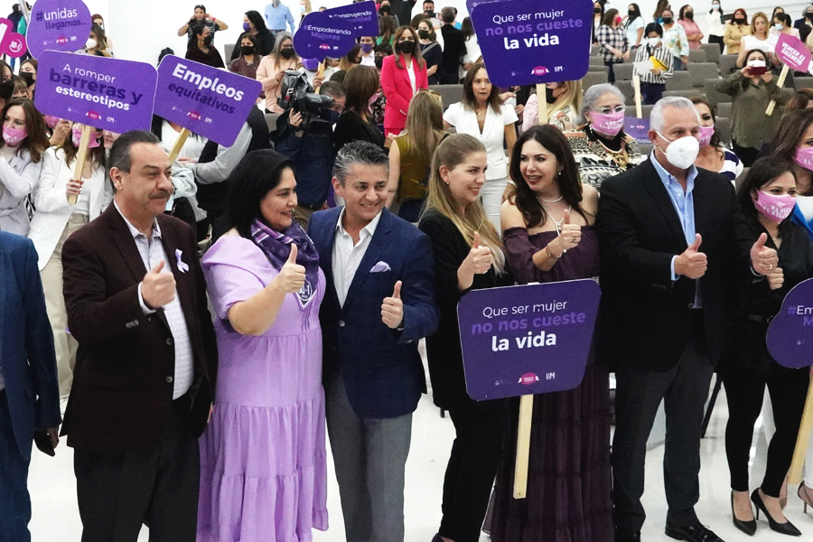
COMISIONES DEL PLENO DEL TRIBUNAL SUPERIOR DE JUSTICIA
Durante el 2022 continuamos con las labores que realizan las diversas comisiones formadas al interior del Pleno del Tribunal Superior de Justicia, con la colaboración de los administradores de justicia del máximo órgano colegiado estatal que aportan su experiencia y conocimiento en temas de impacto social en la impartición de justicia.
Este año las y los magistrados que integran las comisiones llevaron a cabo distintas reuniones de trabajo de manera virtual y presencial para establecer la homologación de criterios que habrán de observarse por las y los juzgadores al desempeñar sus funciones.
Asimismo, las y los integrantes de las comisiones continuaron participando activamente en las mesas de trabajo con diversos grupos colectivos, para promover, proteger y garantizar el acceso a la justicia de todas las personas.
UNIDAD JURÍDICA
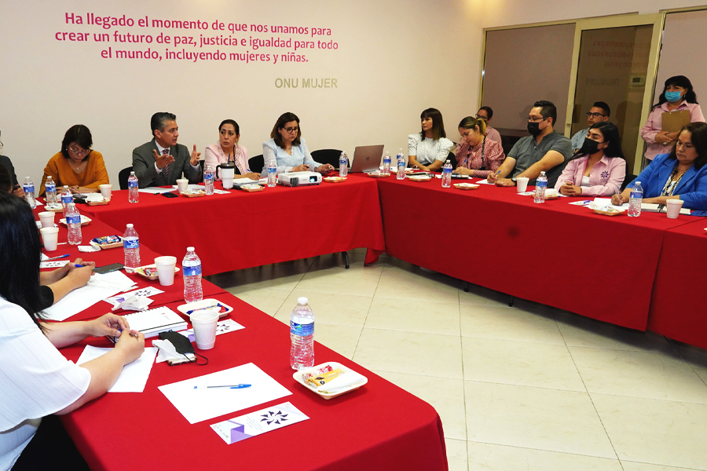
La Unidad Jurídica es el área responsable de la elaboración y revisión de los contratos de prestación de servicios, arrendamiento, prestación de servicios asimilables al salario, entre otros; así como dar atención a los juicios de amparo en los que participe como autoridad responsable y cumplir con los requerimientos que la autoridad federal determine. De igual forma esta unidad se encarga de dar trámite y seguimiento, ante el Tribunal de Conciliación y Arbitraje, a los conflictos laborales que se susciten entre este poder público y sus trabajadores así como proporcionar asesoría jurídica a las instancias del Poder Judicial que así lo requieran.
En lo que respecta a la materia de amparo, durante este año atendimos 42 asuntos y rendimos 20 informes de cumplimiento; además elaboramos 46 contratos de prestación de servicios, 52 de servicios asimilados y dos de arrendamiento. Atendimos un convenio de terminación laboral extrajudicial, 10 declaraciones de beneficiarios además de cuatro demandas en materia laboral, igualmente acudimos a 60 audiencias.
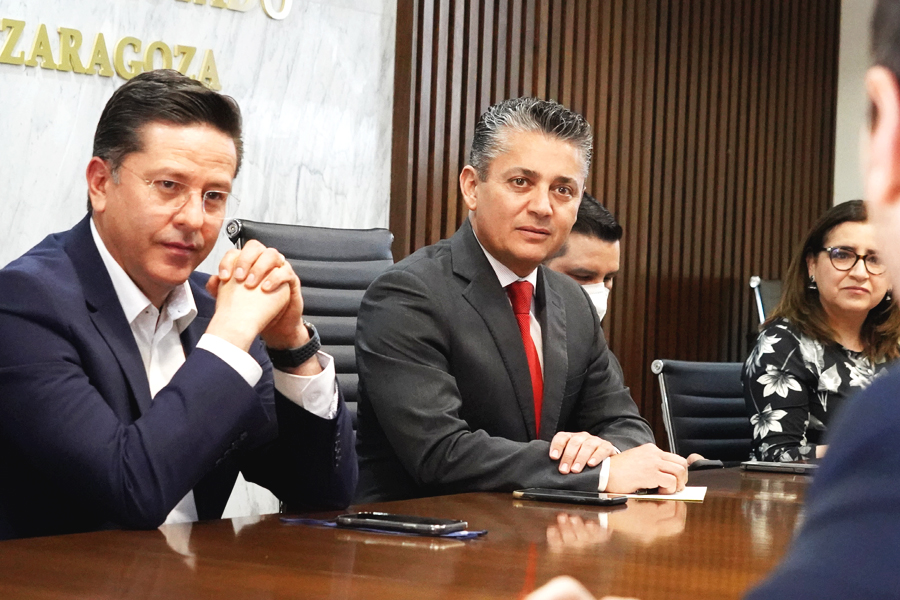
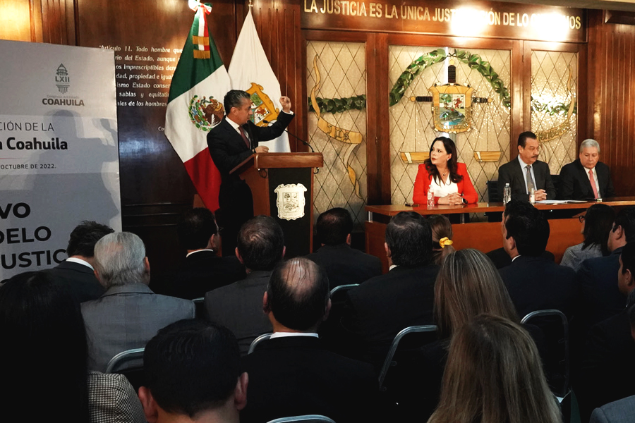